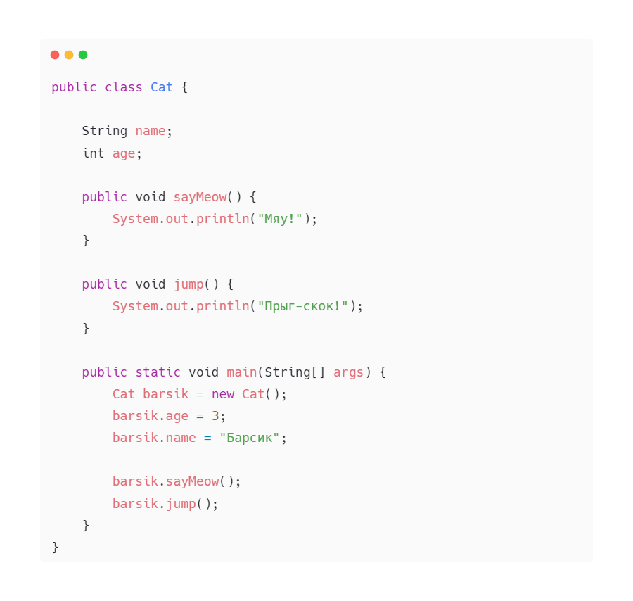

Метод — это совокупность команд, позволяющая выполнить некоторую операцию в программе.
Иными словами, метод — это некоторая функция; что-то, что умеет делать твой класс.
В других языках программирования методы часто называют “функциями”, но в Java слово “метод” прижилось больше:)
Давайте создадим простые методы для класса Cat, чтобы наши коты умели мяукать и прыгать:
sayMeow() и jump() являются методами нашего класса.
Результат их работы — вывод в консоль:
Мяу!
Прыг-скок!
Наши методы довольно просты: они просто выводят текст в консоль.
Но в Java у методов есть главная задача — они должны выполнять действия над данными объекта. Менять значение данных объекта, преобразовывать их, выводить в консоль или делать с ними что-то другое.
Наши текущие методы ничего не делают с данными объекта Cat. Давай рассмотрим более наглядный пример:
К примеру, у нас есть класс, обозначающий грузовик — Truck.
У прицепа грузовика есть длина, ширина и высота и вес (он будет нужен позже). В методе getVolume() мы совершаем вычисления — преобразуем данные нашего объекта к числу, которое обозначает объем (умножаем длину, ширину и высоту).
Именно это число будет являться результатом метода.
Обрати внимание — в описании метода написано public int getVolume. Это значит, что результатом работы этого метода обязательно должно быть число в виде int.
Мы высчитали результат метода, и теперь должны вернуть его нашей программе, которая вызвала метод.
Для того, чтобы вернуть результат метода в Java используется ключевое слово return.